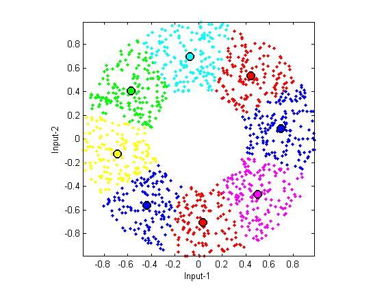
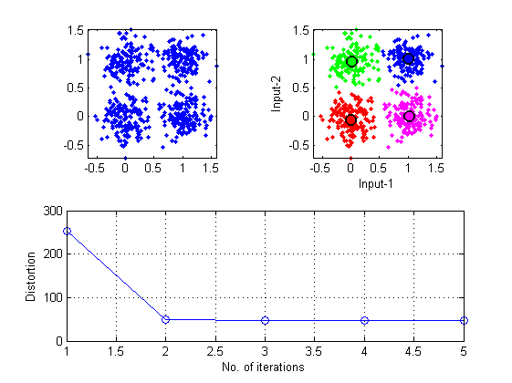

K-Means Clustering
K-means clustering (k-means for short), also known as Forgy's algorithm, is one of the most well-known methods for data clustering. The goal of k-means is to find k points of a dataset that can best represent the dataset in a certain mathematical sense (to be detailed later). These k points are also known as cluster centers, prototypes, centroids, or codewords, and so on. After obtaining these cluster centers, we can use them for numerous tasks, including:
- Data compression: We can use these cluster centers to represent the original dataset. Since the number of centers is much less than the size of the original dataset, the goal of data compression can be achieved.
- Data classification: We can use these cluster centers for data classification such that the computation load is lessened and the influence from noisy data is reduced.
K-means is also a method of partitional clustering in which we need to specify the number of clusters before starting the clustering process. Suppose that the number of clusters is m, then we can define an objective function as the sum of square distances between a data point and its nearest cluster centers. We can follow a procedure to minimize the objective function iteratively by finding a new set of cluster centers that can lower the value of the objective function at each iteration.
Contents
A basic example
The following example demonstrates the use of k-means on a two-dimensional dataset:
DS=dcData(2); centerNum=8; center=kMeansClustering(DS.input, centerNum)
center = Columns 1 through 7 -0.1792 0.1055 0.6745 -0.6775 0.5615 0.3556 -0.4588 -0.6990 0.6695 -0.1383 0.1361 0.4403 -0.5808 0.5612 Column 8 -0.6072 -0.3904
Visualization of clustering process
If you would like to visualize the clustering process, try the next example:
DS=dcData(2); centerNum=8; center=kMeansClustering(DS.input, centerNum, 1);
Iteration count = 1/200, distortion = 140.440285 Iteration count = 2/200, distortion = 68.750535 Iteration count = 3/200, distortion = 66.234388 Iteration count = 4/200, distortion = 65.860381 Iteration count = 5/200, distortion = 65.764995 Iteration count = 6/200, distortion = 65.723120 Iteration count = 7/200, distortion = 65.714912 Iteration count = 8/200, distortion = 65.708982 Iteration count = 9/200, distortion = 65.706945 Iteration count = 10/200, distortion = 65.706945
MATLAB will display the animation as the clustering goes.
Plot the result
We can use vqDataPlot to present the result after clustering, as follows.
% ====== Get the data set DS = dcData(5); subplot(2,2,1); plot(DS.input(1,:), DS.input(2,:), '.'); axis tight, axis image % ====== Run kmeans centerNum=4; [center, U, distortion, allCenters] = kMeansClustering(DS.input, centerNum); % ====== Plot the result subplot(2,2,2); vqDataPlot(DS.input, center); subplot(2,1,2); plot(distortion, 'o-'); xlabel('No. of iterations'); ylabel('Distortion'); grid on
The upper left plot in the above example shows the scatter plot of the dataset. The upper right plot shows the clustering results. The lower plot demonstrates how the objective function (distortion) decreases with each iteration.
Copyright 2011-2012 Jyh-Shing Roger Jang.